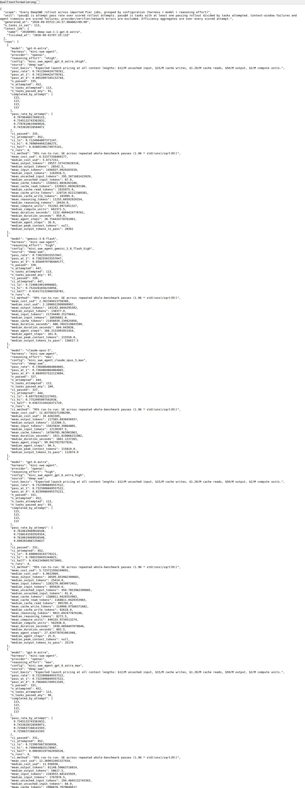
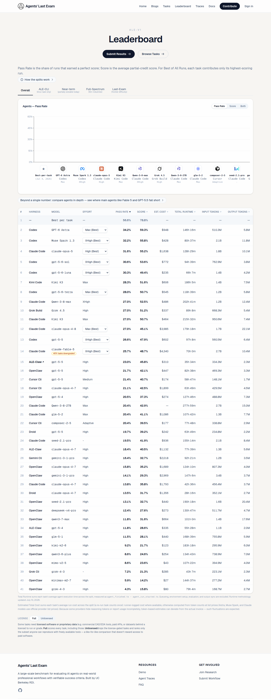

SUPRABENCH · CURATION RUN · 2026-09-19 · batch 1 of 1
Complete-table sync: DeepSWE and Agents' Last Exam
The 2026-09-18 run read the visible default views of these two sources: one "Best" row per model, 21 of 28 DeepSWE models, percentages rounded to whole points, and only Codex-harness rows of Agents' Last Exam. Both publishers expose their complete tables as JSON. This run diffs those tables against production.
- DeepSWE v1.1 leaderboard: 70 published rows → 14 inserted, 16 replaced with the exact value, 18 already exact, 21 belong to configurations production does not track (none created).
- Agents' Last Exam v1 leaderboard: 45 published rows → 25 inserted, 0 replaced with the exact value, 6 already exact, 14 belong to configurations production does not track (none created).
Agents' Last Exam was tracked as "Agents' Last Exam v1 (Codex)" and admitted only Codex-harness rows, which structurally excluded every vendor whose agent is not Codex. The publisher runs each model in its vendor's agent (Codex, Claude Code, Kimi Code, Grok Build, …) and ranks all rows in one table, so that table is the benchmark: the entry was renamed to "Agents' Last Exam v1" and each configuration now carries its best row across harnesses (harness named below). Pass rate is over all 152 tasks of the split; runs covering fewer than 95 % of them are unfinished and were skipped.
Values are stored at 0.1 % precision from the source's exact figures (pass_at_1, passRate), raw scale 0–1000. Replacements keep the source URL of the row they correct.
Source evidence
https://deepswe.datacurve.ai/

https://deepswe.datacurve.ai/artifacts/v1.1/leaderboard-live.json

https://agents-last-exam.org/leaderboard

Machine-readable tables: https://deepswe.datacurve.ai/artifacts/v1.1/leaderboard-live.json · https://agents-last-exam.org/api/demo/leaderboard
Accepted changes (55)
| Production configuration | Benchmark | Source row | Operation | Stored raw (0–1000) |
|---|---|---|---|---|
| GPT-6 Astra (xhigh) | agents-last-exam-v1 | gpt-6-astra [xhigh] via codex | insert | 322 |
| GPT-6 Astra (medium) | agents-last-exam-v1 | gpt-6-astra [medium] via codex | insert | 322 |
| GPT-6 Astra (high) | agents-last-exam-v1 | gpt-6-astra [high] via codex | insert | 316 |
| Claude Opus 5 (High) | agents-last-exam-v1 | claude-opus-5 [high] via claude_code | insert | 316 |
| Claude Opus 5 (Max) | agents-last-exam-v1 | claude-opus-5 [max] via claude_code | insert | 309 |
| GPT-5.6 Sol (high) | agents-last-exam-v1 | GPT-5.6-Sol [high] via codex | insert | 306 |
| Claude Opus 5 (xhigh) | agents-last-exam-v1 | claude-opus-5 [xhigh] via claude_code | insert | 303 |
| Muse Spark 1.3 (max) | agents-last-exam-v1 | muse-spark-1-3 [max] via codex | insert | 296 |
| GPT-5.6 Sol (max) | agents-last-exam-v1 | GPT-5.6-Sol [max] via codex | insert | 296 |
| GPT-5.6 Sol (medium) | agents-last-exam-v1 | GPT-5.6-Sol [medium] via codex | insert | 295 |
| GPT-5.6 Luna (max) | agents-last-exam-v1 | GPT-5.6-Luna [max] via codex | insert | 289 |
| Kimi K3 (max) | agents-last-exam-v1 | kimi-k3 [max] via kimi_code | insert | 283 |
| GPT-5.6 Terra (xhigh) | agents-last-exam-v1 | GPT-5.6-Terra [xhigh] via codex | insert | 276 |
| Qwen3.8-Max (xhigh) | agents-last-exam-v1 | qwen-3-8-max [xhigh] via claude_code | insert | 270 |
| Claude Opus 4.8 (max) | agents-last-exam-v1 | claude-opus-4-8 [max] via claude_code | insert | 270 |
| Claude Fable 5 (xhigh) | agents-last-exam-v1 | anthropic-claude-fable-5 [xhigh] via claude_code | insert | 257 |
| GPT-5.5 | agents-last-exam-v1 | gpt-5-5 [-] via codex | insert | 245 |
| Claude Opus 4.8 (xhigh) | agents-last-exam-v1 | claude-opus-4-8 [xhigh] via claude_code | insert | 224 |
| GLM-5.2 (max) | agents-last-exam-v1 | glm-5-2 [max] via claude_code | insert | 204 |
| GPT-5.5 (medium) | agents-last-exam-v1 | gpt-5-5 [medium] via codex | insert | 184 |
| GPT-5.5 (low) | agents-last-exam-v1 | gpt-5-5 [low] via codex | insert | 171 |
| DeepSeek V4 Pro | agents-last-exam-v1 | deepseek-v4-pro [-] via openclaw | insert | 124 |
| Qwen 3.6 Plus | agents-last-exam-v1 | qwen3-6-plus [-] via openclaw | insert | 86 |
| MiniMax M2.7 | agents-last-exam-v1 | minimax-m2-7 [-] via openclaw | insert | 59 |
| Grok 4.3 | agents-last-exam-v1 | grok-4-3 [-] via openclaw | insert | 43 |
| GPT-6 Astra (xhigh) | deepswe | gpt-6-astra [xhigh] | replace (was 740) | 741 |
| Gemini 3.8 Flash (high) | deepswe | gemini-3-8-flash [high] | replace (was 740) | 738 |
| Claude Opus 5 (Max) | deepswe | claude-opus-5 [max] | replace (was 740) | 736 |
| GPT-6 Astra (high) | deepswe | gpt-6-astra [high] | insert | 732 |
| GPT-6 Astra (max) | deepswe | gpt-6-astra [max] | insert | 732 |
| Claude Opus 5 (xhigh) | deepswe | claude-opus-5 [xhigh] | insert | 732 |
| Claude Opus 5 (High) | deepswe | claude-opus-5 [high] | insert | 728 |
| GPT-6 Astra (medium) | deepswe | gpt-6-astra [medium] | insert | 728 |
| GPT-5.6 Sol (max) | deepswe | gpt-5-6-sol [max] | replace (was 730) | 727 |
| Gemini 3.8 Flash (medium) | deepswe | gemini-3-8-flash [medium] | insert | 710 |
| GPT-5.6 Sol (xhigh) | deepswe | gpt-5-6-sol [xhigh] | insert | 707 |
| GPT-5.6 Terra (max) | deepswe | gpt-5-6-terra [max] | insert | 696 |
| GPT-5.6 Sol (high) | deepswe | gpt-5-6-sol [high] | insert | 694 |
| Grok 4.6 (medium) | deepswe | grok-4-6 [medium] | replace (was 670) | 675 |
| GPT-5.6 Luna (max) | deepswe | gpt-5-6-luna [max] | replace (was 670) | 672 |
| Grok 4.6 (xhigh) | deepswe | grok-4-6 [xhigh] | replace (was 670) | 667 |
| Gemini 3.7 Flash (high) | deepswe | gemini-3-7-flash [high] | replace (was 650) | 653 |
| Grok 4.6 (high) | deepswe | grok-4-6 [high] | insert | 652 |
| GLM-5.3-Flash (max) | deepswe | glm-5-3-flash [max] | replace (was 630) | 634 |
| DeepSeek V4 Pro (Max) | deepswe | deepseek-v4-pro [max] | replace (was 630) | 628 |
| GPT-5.6 Sol (medium) | deepswe | gpt-5-6-sol [medium] | insert | 611 |
| GPT-5.6 Terra (xhigh) | deepswe | gpt-5-6-terra [xhigh] | insert | 602 |
| Qwen3.8-Max (xhigh) | deepswe | qwen3-8-max [xhigh] | replace (was 570) | 575 |
| GPT-5.6 Luna (xhigh) | deepswe | gpt-5-6-luna [xhigh] | insert | 569 |
| Muse Spark 1.2 (xhigh) | deepswe | muse-spark-1-2 [xhigh] | replace (was 550) | 549 |
| Claude Sonnet 5 (Max) | deepswe | claude-sonnet-5 [max] | replace (was 540) | 538 |
| DeepSeek V4 Flash (Max) | deepswe | deepseek-v4-flash [max] | replace (was 530) | 533 |
| Muse Spark 1.1 (xhigh) | deepswe | muse-spark-1-1 [xhigh] | insert | 533 |
| Gemini 3.5 Flash (high) | deepswe | gemini-3-5-flash [high] | replace (was 360) | 361 |
| Gemini 3.1 Pro Preview (high) | deepswe | gemini-3-1-pro-preview [high] | replace (was 118) | 117 |
Identity cleanup needed
- deepswe: "GPT-5.6 Sol" (73) duplicates "GPT-5.6 Sol (max)" (73)
- deepswe: "GPT-5.6 Luna" (67) duplicates "GPT-5.6 Luna (max)" (67)
These older unlabelled rows repeat a labelled configuration of the same model. They are left in place; merging needs a maintainer decision.
Skipped
- Kimi K3 (max) | deepswe: 2 production rows for one cell — needs identity cleanup first
- ALE claude-opus-4-7 [high] via cursor_cli: run covers 137/152 tasks
- ALE gpt-5-5 [-] via openclaw: run covers 136/152 tasks
- ALE anthropic-claude-fable-5 [-] via claude_code: run covers 144/152 tasks
- ALE ark-0614c [-] via claude_code: run covers 143/152 tasks
- ALE gpt-5-5 [-] via cursor_cli: run covers 139/152 tasks
- ALE claude-opus-4-8 [high] via claude_code: run covers 143/152 tasks
- ALE claude-opus-4-7 [-] via ale_claw: run covers 143/152 tasks
- ALE composer-2-5 [-] via cursor_cli: run covers 138/152 tasks
- ALE gpt-5-5 [-] via droid: run covers 137/152 tasks
- ALE claude-opus-4-8 [-] via claude_code: run covers 141/152 tasks
- ALE gpt-5-4 [-] via openclaw: run covers 142/152 tasks
- ALE claude-opus-4-7 [-] via claude_code: run covers 137/152 tasks
- ALE claude-opus-4-7 [-] via openclaw: run covers 141/152 tasks
- ALE gemini-3-1-pro-preview [-] via gemini_cli: run covers 142/152 tasks
- ALE ark-0614c [-] via openclaw_cli: run covers 144/152 tasks
- ALE claude-opus-4-7 [-] via droid: run covers 99/152 tasks
- ALE qwen-qwen3-7-max [-] via openclaw: run covers 142/152 tasks
- ALE gemini-3-1-pro-preview [-] via openclaw: run covers 141/152 tasks
- ALE gpt-5-4 [-] via ale_claw: run covers 143/152 tasks
- ALE glm-5-1 [-] via openclaw: run covers 140/152 tasks
- ALE kimi-k2-6 [-] via openclaw: run covers 144/152 tasks
- ALE grok-4-3 [-] via grok_cli: run covers 142/152 tasks
- ALE gpt-5-4 [-] via codex: run covers 142/152 tasks
- ALE grok-3 [-] via grok_cli: run covers 140/152 tasks